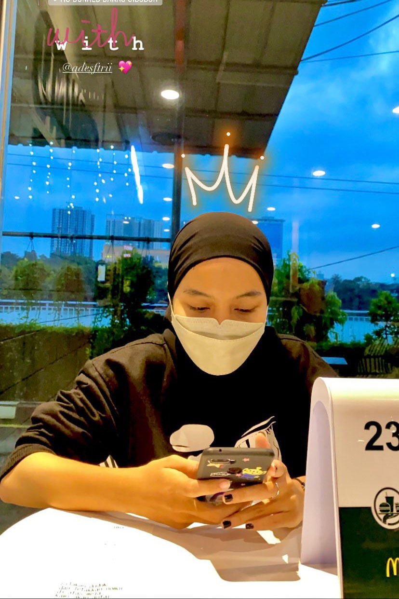
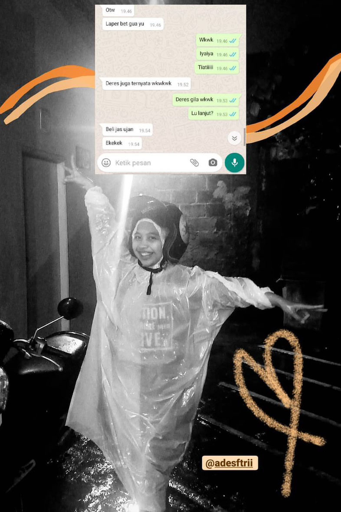

Kalo kata Taylor Swift ; "we're happy, free, confused and lonely at the same time" HAHAHA bener juga sih ya karena udah ngerasain drama di fase umur 20-an ini. Okey, next. Wish kali ini mungkin gabisa diucapin di sini semua yah saking banyaknya pengen banget ngucapin do'a-do'a baik buat lu, tapi gua berharap buat Ades di tahun ini semogaaa selalu diberikan kemudahan dan kelancaran untuk segala urusannya, istiqomah ibadah ya des (jangan kayak gua) ckckck. Semoga selalu dikelilingi sama orang-orang baik di lingkungan yang baik. Dipermudah milik rezekinya, selalu dalam lindungan Allah SWT. segala niat hajat baiknya dikabulkan dan segala keinginan serta impiannya tercapai.. aamiin allahumma aamiin.
Sekalian deh mau bilang makasih (biar ada mellownya dikit) WKWKWK. MAKASIIII ADESSSSSS!!!!! Makasih banyak udah selalu ada buat gua gimanapun keadaannya. Dari dulu sampe sekarang yang setia nemenin gua dalam keadaan apapun juga pasti itu lu salah satunya. Yang paling ngerti gua gimana orangnya, kadang sibuk masing-masing tapi tetep ga pernah lupa satu sama lain. Bersyukur banget bisa kenal sama lu des! Dan super duper ga nyangka masih awet per-chingu-an kita sampe sekaranggg!!! Wkwkwk.
Terakhir sedikit pesan dari gua, jangan lupa makan! Lu kurusan tau gak?! Ngebatin lu sama si Bagas? wkwk semoga gak ya. Jaga kesehatan juga,okey? Biar semangat kerja sambil skripsian!!! Gila keren banget lhooo udah sampe di titik ini. Lu pasti bisa ngelewatinnya, bentar lagi lulus yeayy. Jangan dibawa stress juga yaa kalo mau cerita inget; i'll be there for you Ades.
Okey, sekian basa-basi yang kepanjangan ini dari gua. HEHE sekali lagi Happy Birthday to you! Love u!